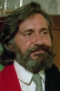

Also known as:The Hanging Woman
Country:Italy, 98 minutes
Spoken languages:Spanish
Genres:Horror
Director(s):José Luis Merino
Writer(s):Enrico Colombo, José Luis Merino
Video Codec:Unknown
Number: 2939


Certification:R
Storyline:
Upon his uncle's death, Serge Chekov journeys to a spooky Scottish village for the reading of the will. But when he inherits the estate, Serge runs afoul of his uncle's jealous wife , his business partner , his maid and others. It's not long before zombies join the fun in this Italian supernatural thriller, also starring Paul Naschy as a nutso gravedigger.
Cast: 


Medium: Bluray,
Loaned: No
Aspect ratio: Unknown